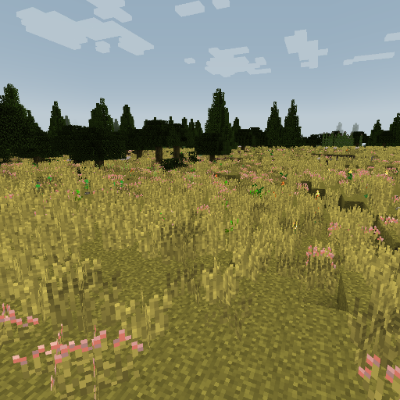
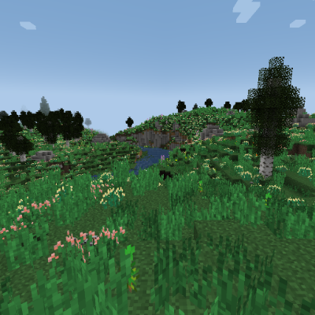
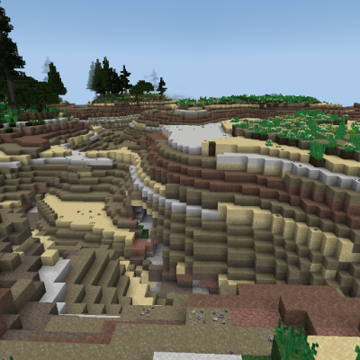
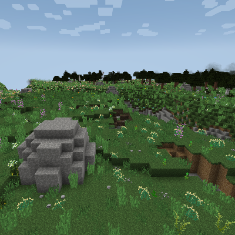
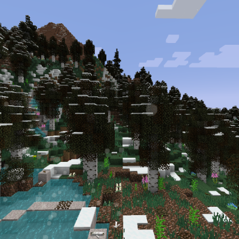
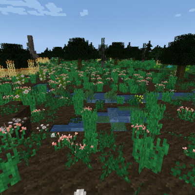
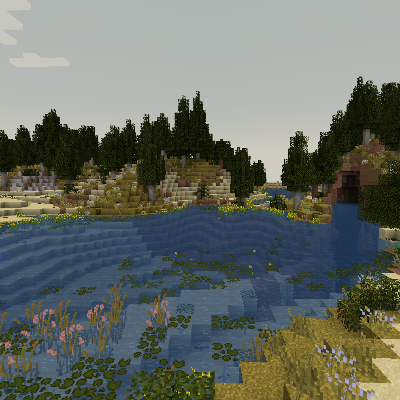
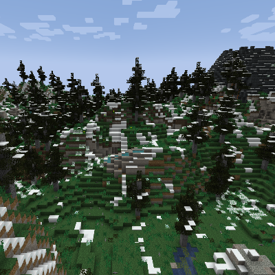
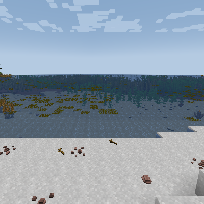

这个世界是由不同的生物群系组成的。生物群系决定了一个区域的地形结构、地表材料和其他的一些特征。从海洋到平原，从丘陵再到山脉。这个世界的一切你都能尽情探索。
接下来的几页包含了关于一部分你能遇见的生物群系的信息。
平原是一个低海拔的生物群系。和丘陵类似，它们仅比海平面高一点点。它们地形宽广，有时蔓生着大片的野花野草，又或者点缀着稀疏的树林。
一片平原。
丘陵和连绵丘陵是两种低海拔到中海拔的生物群系，通常与平原或海拔较高的地区接壤。这里有不少巨石，火山温泉也会在此处罕见地生成。
一条小河穿行于丘陵之间。
恶地是一种中海拔陆地生物群系，通常位于高原、山脉或连绵丘陵附近。其特征是那些被沙子和砂岩覆盖着的崎岖山脊。沙子的颜色不尽相同，有时是红棕色的，有时是黄白色的，也可能介于两者之间。
一片恶地。
高原是一种高海拔陆地生物群系。它们那一望无际的原野看上去与平原相似，但海拔要比平原高上许多。高原上经常有巨石点缀，偶尔还能找到干涸的死温泉。
一条深河峡谷横穿高原。
在高海拔地区会生成多种不同类型的山脉。原始山脉比较矮小平滑，而普通山脉则更为高耸，其表面暴露的石块也更多些。位于板块运动剧烈地区的山脉有时还会生成温泉，甚至是火山。
积雪山坡上的一眼温泉。
与高耸入云的山脉相反，低地是一种泥泞而潮湿的生物群系。它们往往位于海平面或海平面之下。这里淡水水源充足，到处都是壤泥和各种植物。
一片低地。
低地峡谷也是一个低海拔陆地生物群系，通常与海洋或其他低海拔生物群系接壤。这里地势起伏中等，形状不齐的小水池遍布于其中，有时还会生成干涸的休眠温泉。
一个低地峡谷。
与低地峡谷类似，峡谷是一个中等海拔的陆地生物群系。这里的地势起伏中等，小水池和湖泊遍布。这是一个地质非常活跃的生物群系，矮小的火山、巨石和活跃的温泉都很常见。
一片峡谷，远处有一座火山。
群峦传说的浩瀚海洋将各个大陆分隔开来。表面上海洋毫无特色，但水下则是完全不同的一番景象——千奇百怪的植物和海洋生物遍布于此，海带也会在这个生物群系生成。而在较冷的气候中，高耸的冰山和海冰则会漂浮于海面之上。
从海滩上眺望地平线。